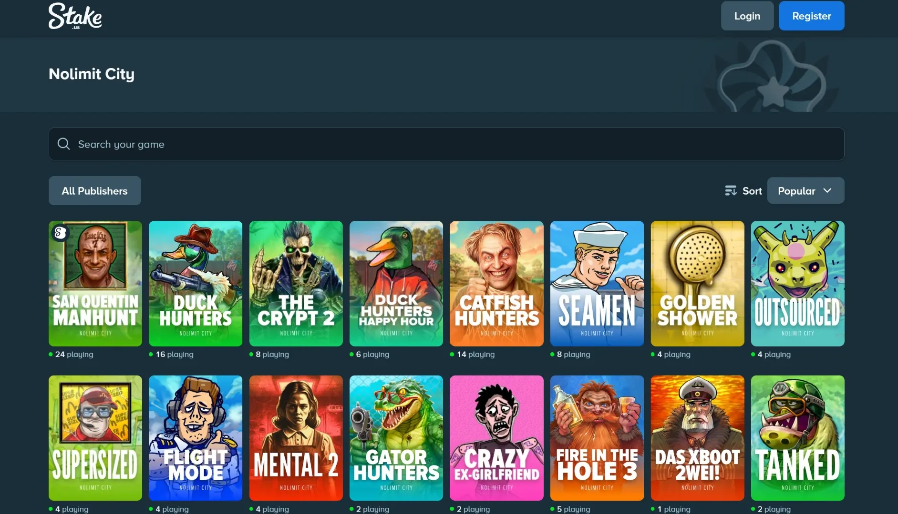

More Provider Guides
All Reviews & Product → Stake and Pragmatic Play Stake and Hacksaw Gaming Stake.us Review Stake and Shady Lady Stake and Uppercut Gaming Stake and Evolution
Stake and Nolimit City Overview
Nolimit City is the cult-favorite provider on Stake.us with 28 titles currently available. Known for extreme volatility, dark and irreverent themes, and their proprietary xMechanics system, NLC has built a devoted following among high-risk slot players. They were named best slot provider of 2026 by multiple outlets, and their games consistently deliver some of the highest max win potentials in the industry, topped by Tombstone Slaughter at a staggering 500,000x bet.
xMechanics Explained
Before diving into specific games, here's what makes Nolimit City different. Their slots run on proprietary xMechanics that stack together for explosive win potential:
- xNudge, Wild symbols nudge to fill entire reels, adding a +1 multiplier for each nudge step. The foundation of most NLC big wins.
- xWays, Mystery symbols that reveal stacks of matching icons, dynamically increasing the number of win ways (up to 46,656 in some games).
- xBomb, Wild bombs that explode and remove surrounding symbols while boosting win multipliers. Used heavily in the Fire in the Hole series.
- xSplit, Splits symbols into two, doubling the ways to win. When combined with xNudge, the results get absurd.
- xHole, Scatters symbols to random positions with split sizes of 1–3, creating chain reactions.
Most NLC slots combine 2–4 of these mechanics in a single game, which is why their volatility profiles sit at the extreme end of the spectrum.
2026 New Releases & Upcoming
Nolimit City's 2026 roadmap is stacked. Here are the titles released or confirmed for Stake.us:
| Title | Max Win | Status | Why It Stands Out |
|---|---|---|---|
| Supersized | 12,345x | Live | Food-themed comedy, 5–10 expanding reels, Clone & Press features, Fat/Fatter/Fattest Spins. 96.07% RTP |
| San Quentin Manhunt | TBA | Apr 21 | Third entry in the San Quentin franchise. xWays, xNudge, and xSplit confirmed. Prison breakout sequel |
| Punk Rocker 3 | 19,089x | Apr 7 | Berlin-set punk sequel. xTra mechanic for extra spins without resetting progress. 96.04% RTP |
| Tombstone Begins | TBA | May 11 | Prequel to the legendary Tombstone series. Origin story of the Wild West franchise |
| True Grit Redemption 2 | TBA | 2026 | Sequel to the 2021 fan favorite. On the official NLC roadmap |
| The Crypt 2 | TBA | Live | Already on Stake.us. Sequel to the horror-themed original |
| Catfish Hunters | TBA | Live | Spin-off of Duck Hunters. Same scatter-pays system with aquatic twist |
| Duck Hunters Happy Hour | TBA | Live | Variant of Duck Hunters with boosted multiplier starting positions |
Recent 2025 releases also live on Stake.us include Mental 2, Fire in the Hole 3, Tombstone Slaughter, Duck Hunters, Seamen, Golden Shower, Outsourced, Flight Mode, Gator Hunters, Crazy Ex-Girlfriend, and Das xBoot 2wei.
Most Popular Nolimit City Titles on Stake.us
These are the NLC games that Stake.us players keep coming back to:
- Tombstone Slaughter, The crown jewel. 500,000x max win (the highest non-jackpot slot ever made), xNudge Wilds, Revolver mechanics, and a Revenge Meter system. Insane volatility rated 12/10. 96.00% RTP.
- Fire in the Hole 3, Mining sequel with xBomb Wilds, xHole mechanics, and Lucky Wagon Spins. 70,000x max win, 6x6 expanding grid with up to 46,656 ways. 96.05% RTP.
- Mental 2, Dark asylum theme with Fire Frames, xHole, xWays, xNudge, and xSplit all in one game. 99,999x max win. 96.06% RTP. The original Mental was a community sensation.
- San Quentin 2: Death Row, Prison-themed with 200,000x max win and 1,024 ways to win. One of the most volatile slots ever released.
- Book of Shadows, NLC's take on a Book slot with Shadow Rows mechanic. 96.14% RTP, one of their highest.
- Duck Hunters, Redneck comedy with scatter pays, xWays, Infectious xWays, and position multipliers up to 1,024x. 30,000x max win. 96.05% RTP.
- Seamen, Compact 3-5-5-3 grid that punches way above its size. xWays, Bombs, Fire Frames, and Molotov Fire. 20,000x max win. 96.04% RTP.
- xWays Hoarder 2, Post-apocalyptic sequel with stacked xMechanics. Fan favorite for bonus hunters.
- Tanked, Military theme with Mayhem Spins. 96.09% RTP.
- Kill Em All, Action-packed with multiple bonus tiers and aggressive volatility.
How Nolimit City Slots Work on Stake.us
Same process as every other slot on the platform. Pick between GC (Gold Coins, entertainment mode) or SC (Stake Cash, redeemable for prizes), set your play, and spin. SC winnings follow standard redemption rules: $50 minimum, 3x playthrough on promotional SC, and verified account.
All Nolimit City games on Stake.us use certified RNG and server-side RTP settings that cannot be modified by the platform. Many NLC titles include Nolimit Bonus buy options that let you jump straight into bonus rounds at various cost multipliers, a feature that's contributed heavily to their popularity with experienced players.
Getting Started
New players can register at Stake.us with code MAXBET to receive 250,000 GC + 25 Free SC at signup, plus 10,000 GC + 1 SC daily for 31 days (310,000 GC + 31 SC total).
The 3.5% rakeback is also activated with the MAXBET code and applies to all plays across every game type, including Nolimit City slots.
Frequently Asked Questions
Yes. Stake.us currently features 28+ Nolimit City titles spanning their biggest franchises including San Quentin, Fire in the Hole, Mental, Tombstone, and Book of Shadows. New releases are added regularly.
Tombstone Slaughter holds the record at 500,000x your play, making it the highest max-win slot from any provider. Other heavy hitters include San Quentin 2: Death Row at 200,000x and Mental 2 at 99,999x.
xMechanics are Nolimit City's proprietary slot features. xNudge expands wilds with multipliers, xWays dynamically increases win ways, xBomb destroys symbols and adds multipliers, xSplit doubles symbols and ways, and xHole scatters symbols to new positions. Most NLC slots combine multiple xMechanics.
This article provides general information only. Actual bonuses, rewards, and platform availability can vary based on account eligibility, play history, timing, and internal Stake calculations. Always check the official Stake.us website for current terms and conditions.